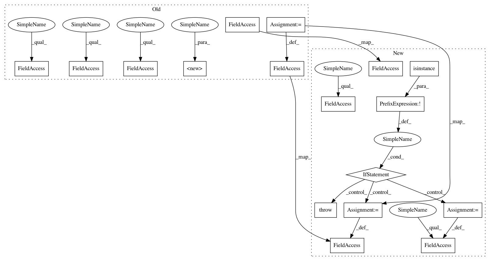

16246c8a9d84c875208a5e370da87888e799dd96,src/python/pants/pantsd/watchman.py,Watchman,__init__,#Watchman#Any#Any#Any#Any#Any#Any#Any#,31
Before Change
:param str socket_path_override: The overridden target path of the watchman socket, if any.
:param str metadata_base_dir: The overriden metadata base dir for `ProcessMetadataManager`.
super(Watchman, self).__init__(name="watchman",
process_name="watchman",
socket_type=str,
metadata_base_dir=metadata_base_dir)
self._watchman_path = self._normalize_watchman_path(watchman_path)
self._watchman_work_dir = os.path.join(work_dir, self.name)
self._log_level = log_level
self._startup_timeout = startup_timeout
self._timeout = timeout
self._state_file = os.path.join(self._watchman_work_dir, "{}.state".format(self.name))
self._log_file = os.path.join(self._watchman_work_dir, "{}.log".format(self.name))
self._sock_file = socket_path_override or os.path.join(self._watchman_work_dir,
"{}.sock".format(self.name))
self._logger = logging.getLogger(__name__)
After Change
def _normalize_watchman_path(self, watchman_path):
if not self._is_valid_executable(watchman_path):
raise self.ExecutionError("invalid watchman binary at {}!".format(watchman_path))
return os.path.abspath(watchman_path)
def _maybe_init_metadata(self):
safe_mkdir(self._watchman_work_dir)
// Initialize watchman with an empty, but valid statefile so it doesn"t complain on startup.
safe_file_dump(self._state_file, "{}")
def _construct_cmd(self, cmd_parts, state_file, sock_file, log_file, log_level):
return [part for part in cmd_parts] + ["--no-save-state",
"--statefile={}".format(state_file),
"--sockname={}".format(sock_file),
"--logfile={}".format(log_file),
"--log-level", log_level]
In pattern: SUPERPATTERN
Frequency: 3
Non-data size: 17
Instances
Project Name: pantsbuild/pants
Commit Name: 16246c8a9d84c875208a5e370da87888e799dd96
Time: 2017-11-08
Author: stuhood@twitter.com
File Name: src/python/pants/pantsd/watchman.py
Class Name: Watchman
Method Name: __init__
Project Name: pantsbuild/pants
Commit Name: 16246c8a9d84c875208a5e370da87888e799dd96
Time: 2017-11-08
Author: stuhood@twitter.com
File Name: src/python/pants/pantsd/watchman.py
Class Name: Watchman
Method Name: __init__
Project Name: NVIDIA/OpenSeq2Seq
Commit Name: 9a76bb5272c3f8662b266410c0c5b0dbce3ec025
Time: 2018-08-20
Author: jasoli@nvidia.com
File Name: open_seq2seq/parts/rnns/attention_wrapper.py
Class Name: LocationSensitiveAttention
Method Name: __init__
Project Name: dmlc/gluon-nlp
Commit Name: a947d66d28baaae1302363556a8a18b04fa6aa40
Time: 2018-08-16
Author: leonard@lausen.nl
File Name: gluonnlp/embedding/evaluation.py
Class Name: ThreeCosMul
Method Name: __init__